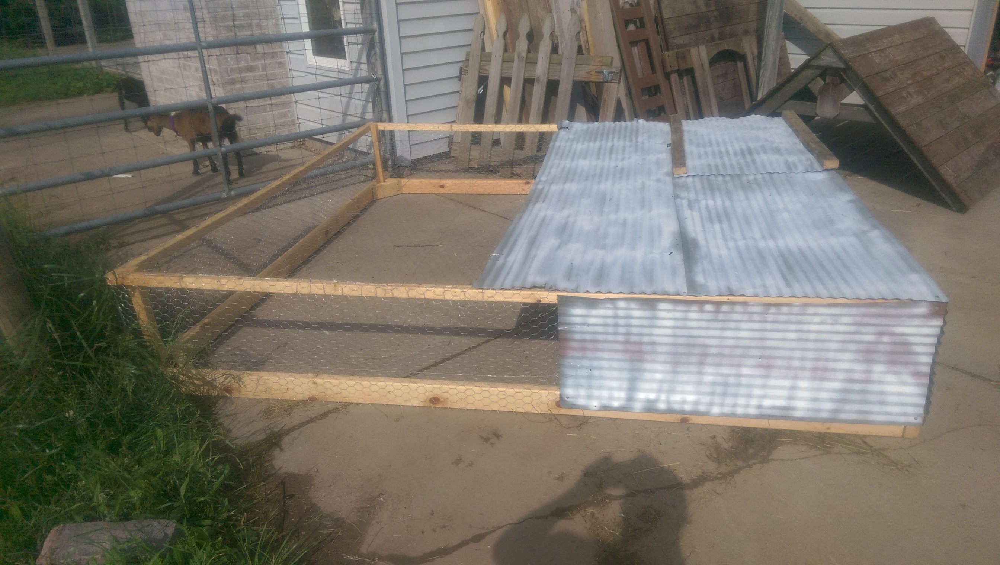
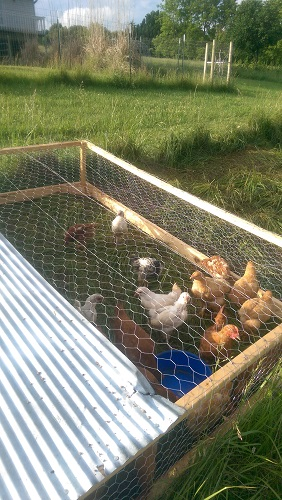
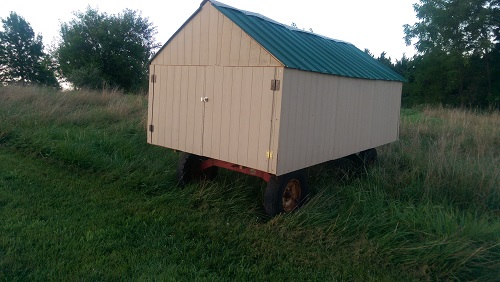
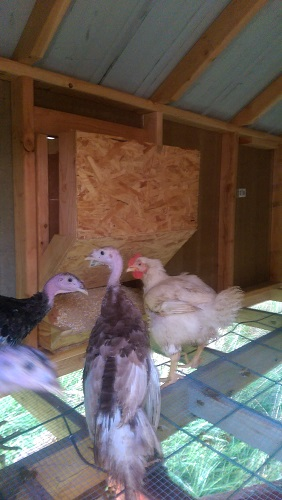

Poultry make sense on just about any farm. Meat or eggs, parasite control, and cleanup of all your leftovers...what's not to love? Our goal was to have some for eggs, be able to run some batches for meat, and hopefully have all the birds on pasture at least most of the time. Margaret's seen a lot of variations on "chicken tractors," moveable chicken coops that can be dragged onto fresh grass every day or so. So we set out to try and recreate a few of those. We've ended up recreating many more than we intended though!
Hoop structure

Our first attempt was a hoop structure. A 16-ft cattle panel was bent into an arch and fastened to a wooden frame; the panel and the sides were covered in chicken wire. We attached wheels to one end and a handle to the other, to facilitate moving it around. This structure provided about 48 ft2 of floor space for the birds. During inclement weather, a tarp could be stretched over some or all of the frame. The birds learned after a week or two that when it was pen-moving time, they had to walk to keep ahead of the back end of the frame.
While the design was good - and one many people have used - the winds we've gotten here are too much. During the first really bad thunderstorm, the tarp-covered hoop caught too much wind and nearly flipped over. After a few midnight rescues of soaked chickens, the hoop was abandoned. Since our attempt, we've seen some designs that involve sinking a t-post next to the structure every time it's moved, and tying to that for support. With nearly daily moves of the pen, this seemed a bit excessive work-wise.
Salatin-ish-style tractor
 "Salatin style" chicken tractors were thrust into the sustainable ag forefront by Joel Salatin of Polyface Farms in Swope VA. These are low-lying squares or rectangles, meshed on the sides and about 3/4 of the surface area covered with wood or metal roof. Margaret's was about 8ftx8ftx18", chicken wire on the sides, with a recycled tin roof (taken from the dilapidated shed in our back pasture). She also added some tin to the sides of the structure, to protect from driving winds and rain. A hinged section of the roof provided access to the birds, their feeders, and waterers. While heavy, it was tolerable to move on a daily basis, and provided excellent wind and rain protection. The coop provided adequate space for almost 24 birds, which was just right for a batch of broilers, and plenty enough space for egg-layers.
There were a few challenges though - mostly relating to the height. As with the hoop structure, getting the birds adjusted to walking ahead of the dragged coop took awhile. The chickens tended to move their feeder pans around over the course of eating, and once some hens started laying eggs, they tended to not lay them near the access door. But because the coop sat so low, getting a person into the coop to remove birds (or feeders or waterers) was challenging and messy. (Solution: drill a hole in the feeder pan, run twine through it, and tie to part of the frame so it couldn't 'wander' too far.)
But this coop didn't last forever either. On even ground it was fine, but anywhere with dips or divots in the ground or grass (as in, everywhere...), this left gaps under the frame of the coop. A few times chickens got out, but the real problem was predators getting in. After multiple opossums got multiple birds, we realized something else would have to be done. As mentioned before, we have an endless supply of predators.
Doghouse-style
Once the Salatin-style coop failed, we knew we'd need something else. Once the broilers were gone we'd have around a dozen laying hens remaining, but we decided for the moment to just keep a few hens so we could have eggs for the two of us, and we'd figure out a new coop in the spring. Margaret's family visited and helped build a small doghouse-looking box that could house 4 or 5 hens. The house was OSB sides, 2x4 frame. We installed a a hinged roof to allow human access to collect eggs and such, and stapled feed sacks over the seam like shingles to prevent water from dripping in on the chickens. It sat on top of a tin floor (for easy cleaning) raised off the ground on 4x4s (to keep predators from burrowing underneath and breaking through the floor). We fenced in a small yard for the birds; the fence was 24" high chicken wire stretched between t-posts and we covered the top with lightweight plastic mesh.
This coop was a good one, and kept our egg layers for quite awhile. It's still around in fact, though mostly used as a chicken "hospital". At first the chickens had an always-open access door from the shelter to their yard, but eventually (after more opossums squeezed through the fence) we built a sliding door so that they could be shut in at night. (The doors were rebuilt several times as well after other predators ripped through the original ones.) Ultimately though, the demise of the small coop was the small-ness. About this time, avian influenza hit the upper Midwest and egg prices started to rise. Local family members and friends asked us for eggs, so we decided to keep more of our hens, and built yet another coop.
Swingset hack

Previous residents had left the frame of an old wooden swingset on the farm, not far from the doghouse-style coop. So a simple and cheap hack was to slap 4ftx8ft OSB panels up on the sides to enclose it, stretch chicken wire over some gaps as windows, and ta-da we had a chicken coop. The A-frame shape of the swingset made it easy for a human to get in and collect eggs, plus made it easy to hang feeders from the ceiling beam (hanging feeders tend to stay a bit cleaner, we've found, than pans on the floor). Margaret built some roosts and nest shelves, and shingled the top foot or so of the A-frame, to keep water out. On the outside, we fenced in a yard similar to the doghouse-style yard.
Sadly this coop wasn't predator-proof either. Weasels (we think) got in through small gaps at the bottom of the wall panels, and after we sunk metal sheets into the ground another few inches, continued to dig their way in. Raccoons tore through the chicken wire windows and learned to open the external door. We put wood cross-pieces over the windows and made more complicated latch systems for the external door, but the 'coons continued breaking through the windows until we had only two birds left. These Margaret brought to the farm she worked at until we could figure something else out.
Fortress
 We knew we wanted birds again, and Margaret had already ordered turkeys to raise for her work farm for Thanksgiving sales. So we finally put a bit of extra money into the equation and built a really sturdy coop. To make it moveable, we bought a trailer frame and built a 7ftx12ft coop on top of that. (Why 7ft? Home Depot often sells 7ft 2x4s for significantly cheaper per foot than 8ft ones! We buy these all the time just to have around, and decided it'd be cheapest to just work with that dimension.) The sides are somewhat water-resistant fabricated wood-like siding panels about 3.5ft tall (half of one of those 7ft 2x4s!), and the roof is metal roofing readily-available at hardware stores. The floor is a cut 16ft cattle panel on top of 2"x4" hardware cloth - so manure drops out of the coop, but it's still sturdy enough for a human to walk across. Eric designed a gravity-flow feeder that can be accessed from the outside, so feeding is simple. A watering system with similar principles is in the works but hasn't been finalized. Also in the future, we'll add some windows (that can be closed during winter) and nest boxes (ideally that can be accessed from the outside).
So far the coop has housed a bunch of turkeys, and we've had no problems. Moving the coop is more of a chore - it can't be moved by hand, we have to hitch up the Gator - but we don't do it too often. During the winter, the open-air bottom does make the coop chilly, but so far (down to low teens) the birds have been fine. We put some plastic mats on part of the floor - actually the same things you'd put under a computer chair over carpet - to insulate a little bit (while being easy to clean!). Because of the rushed nature of the project (and a dwindling budget), we weren't able to install an outside yard for the birds this year. In the future, the goal is to have a small solar-powered fencer charging netting fence that can be moved around every few days. The coop was costly (around $800; a tad over $1000 if you include the electric fence supplies) but we think it was worth the investment.
Summary (of All Coop Projects): Lessons Learned
- Most important: protect from predators!
- Eliminate as many finger-holds/claw-holds as possible. Our fortress coop has very few edges that a predator could grip to either pry open chicken wire or rip through thin siding.
- We've also considered putting motion-activated lights or security cameras on or near the coops, to see what is getting at the birds and from where.
- No gap is small enough to ignore. We had 'coons getting in through holes smaller than a softball, eating four whole chickens, and getting back out.
- Next most important: protect from weather.
- The final coop is very weather-resistant, and despite its height is wind-proof. Animals don't grow or produce well when they get too wet or too cold.
- Despite others' successes with the hoop structures, we learned that they're very climate dependent...they just don't work with our land and how the wind flows on it!
- Be resourceful and make use of what you have lying around, but there's a time and place for skimping and a time and place for spending! The final coop cost significantly more than all the others combined, but will last us for years and years, and is very secure. With that said, we still planned the dimensions in advance to minimize the number of expensive pieces of lumber we'd need.
- Always keep a 2x4, shovel, or sturdy stick by the chicken coop in case you need to club a raccoon.